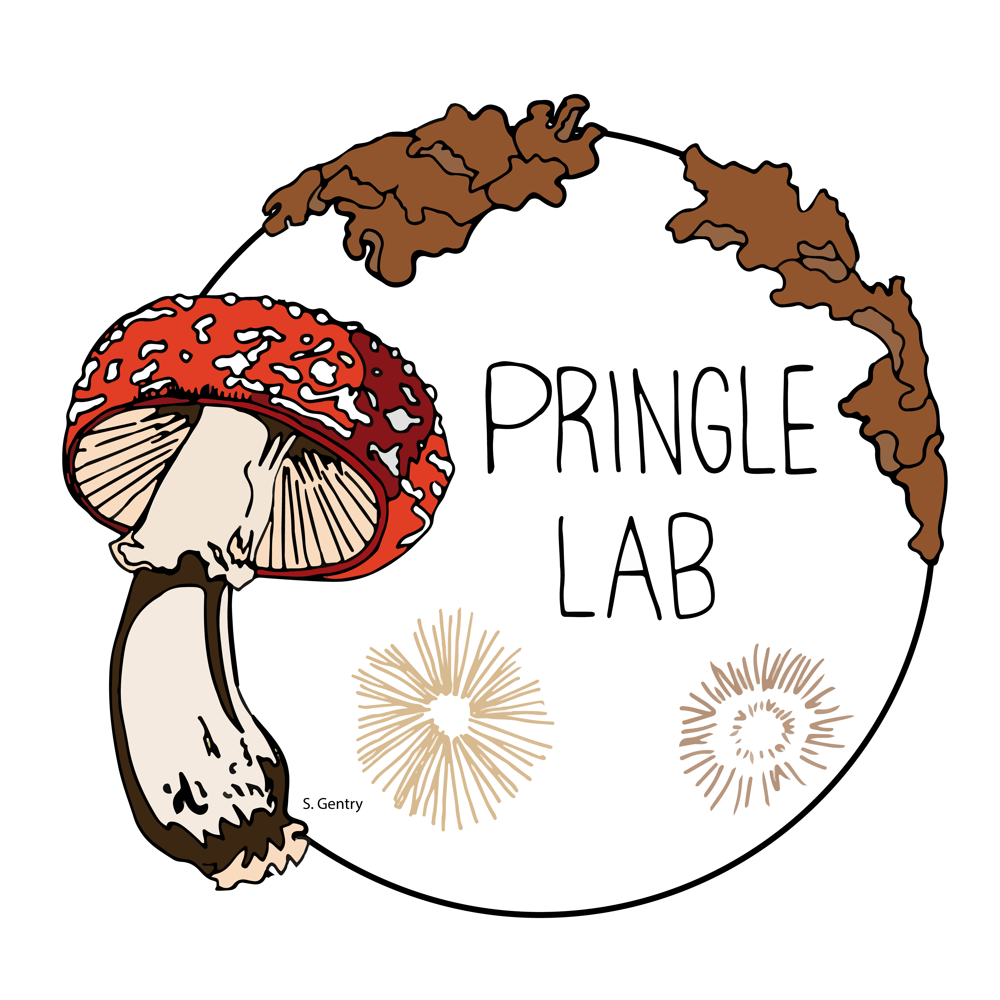

The Pringle Laboratory
Ecology & Evolution of Fungi
The missions of the Pringle lab are to publish excellent science and have a lot of fun as we make our discoveries: our twin aims are data and joy. We believe the best science happens in a diverse lab whose members come from all walks of life and every corner of the globe, and we welcome you and respect whatever path brought you to us.
About Us
The Pringle laboratory focuses on the biology of species whose life histories and body plans seem very different from our own. Fungi encompass a heterogeneous array of both microbes and macrobes, and the Pringle laboratory uses fungi as tools to test and elucidate general principles of ecology and evolution.